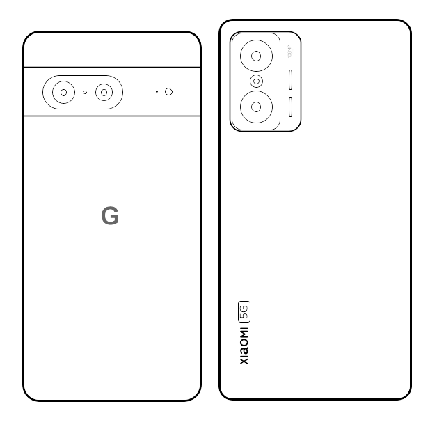

Welcome to Gasukaku Homepege!
信号機やガジェット系動画を投稿している「Gasukaku」のホームページです。person About me
信号機やガジェットが好きな高校生です。
信号機

小さな頃から興味がありました。小学生のときにメーカー名を知り、現在では独自の交差点番号を降ったりしています。
ガジェット

主にスマホ系メインのガジェットに興味があります。
Pixel・Xiaomiユーザー、自称MiFanです。
スマホ機種選び相談(無料)も受け付けているのでぜひご相談ください。
相談フォームリンク集
edit_note Note
ブログ的な感じのページです。備忘録や信号機の更新情報を投稿していこうと思います。不定期更新。
技術力不足でまだ未完成？
brand_awareness News
2024/11/04「安曇野市独自交差点番号表24年7月版」に一部交差点抜けが確認されたため公開を中止します。誠に申し訳ございません。
2024/05/06 新しいノートを投稿しました。
2024/05/06 ノートページを追加しました。
2024/03/17 ダウンロードページを追加しました。
2024/03/16 ホームページをリニューアルしました
done以上で全てです。
mail Contact
お問い合わせは以下リンクのフォーム又はメールアドレスまでお願いします。X等のDMでも受け付けています。
メールアドレス：contact☆gasukaku.net
※迷惑メール防止のために@を☆に置き換えています。